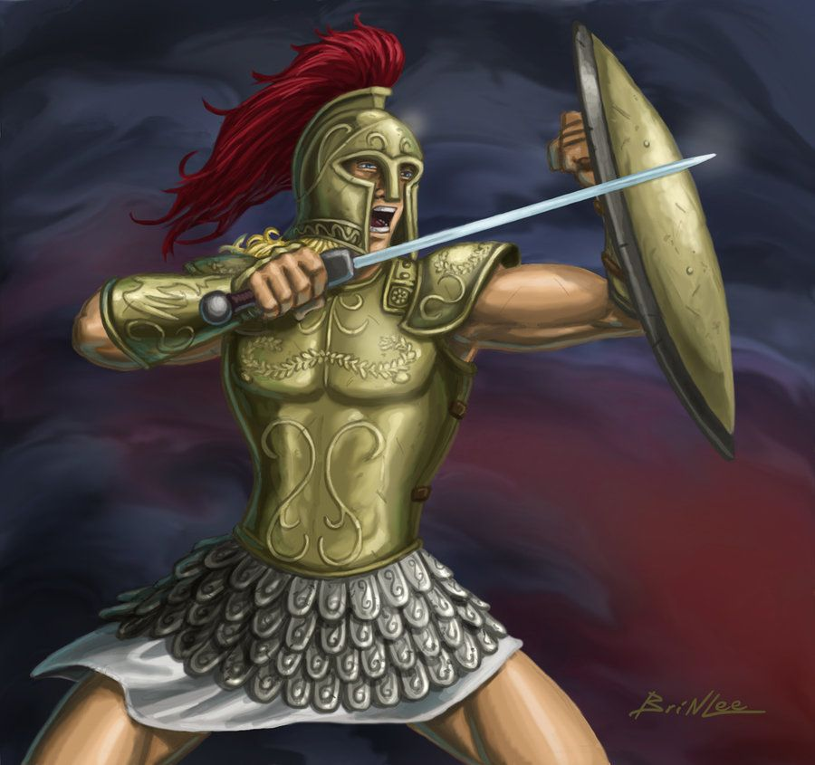

Aquiles
El más famoso de los guerreros griegos. Invulnerable salvo por su talón. Héroe de la Ilíada.
La Guerra de Troya fue un conflicto legendario entre griegos y troyanos. Muchos héroes participaron de ambos lados, dejando una huella en la mitología.
El más famoso de los guerreros griegos. Invulnerable salvo por su talón. Héroe de la Ilíada.

Rey de Ítaca, conocido por su inteligencia. Creador del famoso caballo de Troya.

jefe de la expedición, a quien se califica de sumamente regio.
conocido como Ayax el menor. Violó a Casandra, hija de Príamo, en el saqueo de Troya y profanó los altares de los dioses, que por este motivo hicieron naufragar la flota griega en la travesía de regreso.
el guerrero más importante después de Aquiles. Testarudo y taciturno, enloqueció cuando le dieron a Odiseo la armadura de Aquiles. Intentó matar a los comandantes griegos, pero en su lugar liquidó varias ovejas y, abochornado, se suicidó.
vidente de los griegos, que interpretaba los presagios divinos.
destacado guerrero, pero un tanto violento en los consejos. Hirió a Ares y después a Afrodita.
hermano de Agamenón que aparece frecuentemente como persona ineficaz.
el griego de más edad, pródigo en consejos.
Príncipe de Troya y gran defensor de la ciudad. Valiente y noble.
Hermano de Héctor. Su decisión de llevarse a Helena desencadenó la guerra.
Huyó del saqueo de Troya y, según la mitología latina, fundó Roma.
aliado licio de Troya, que intercambió su armadura con la del griego Diomedes como símbolo de sus antiguos lazos de amistad y hospitalidad.
rey de Troya. Le arrebató a Aquiles el cuerpo de su hijo Héctor y murió cuando cayó la ciudad.
hijo de Zeus, muerto por Patroclo. Zeus sintió la tentación de salvarlo, pero Hera le recordó que incluso los héroes eran mortales.